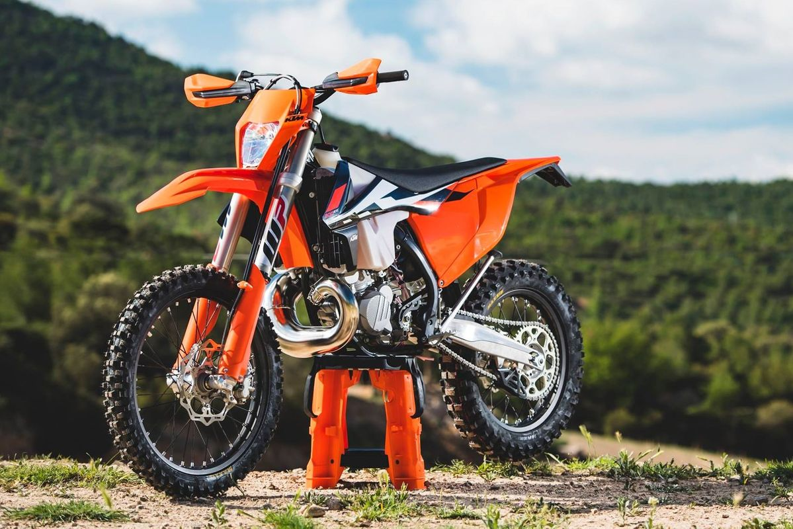
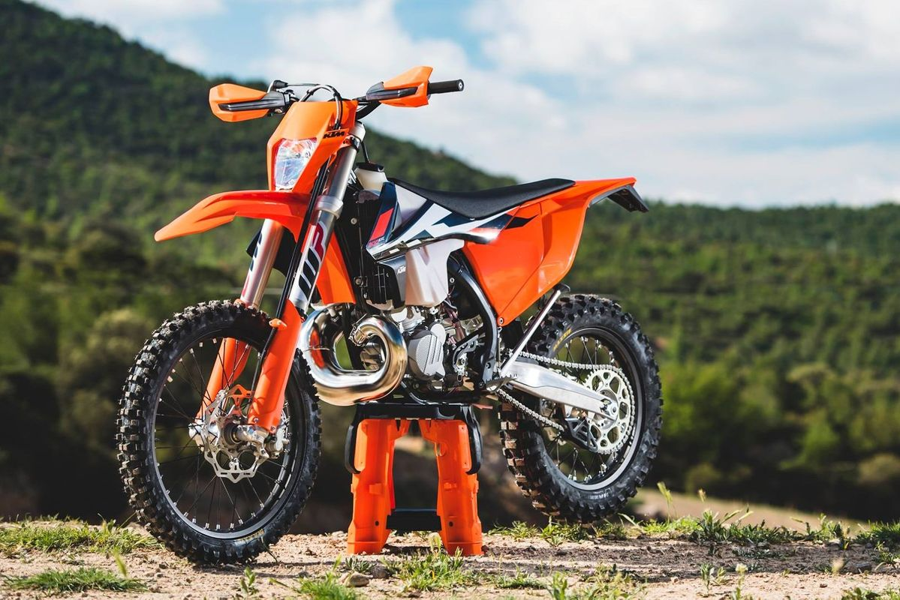

Block Motero
Las motocicletas son una forma emocionante y liberadora de moverse por la carretera, y existen muchos modelos
diferentes que se adaptan a las necesidades y preferencias de cada persona. En este ensayo, exploraremos doce
modelos de motocicletas, cada uno con sus características únicas y atractivas.
Empecemos con la Ducati Panigale V4, una moto de carreras de alta gama con un motor de cuatro cilindros en V y
214 caballos de fuerza. Esta moto es perfecta para aquellos que buscan una experiencia de conducción
emocionante y desafiante.
Otra moto emocionante es la Honda CBR1000RR, que es una moto deportiva que ha sido diseñada para la velocidad
y la maniobrabilidad. Con un motor de cuatro cilindros en línea y 191 caballos de fuerza, esta moto es una
bestia en la carretera.
La Yamaha YZF-R1 es otra moto deportiva de alta gama con un motor de cuatro cilindros en línea y 200 caballos
de fuerza. Esta moto ha sido diseñada para competir en carreras y ha sido un éxito en los circuitos de
carreras de todo el mundo.
Para aquellos que buscan una moto de turismo, la BMW R 1250 RT es una excelente opción. Esta moto cuenta con
un motor bóxer de dos cilindros y 136 caballos de fuerza, y ha sido diseñada para hacer viajes largos de
manera cómoda y eficiente.
La Harley-Davidson Softail es una moto clásica y atemporal que ha sido popular durante décadas. Con un motor
Milwaukee-Eight de cuatro cilindros y 114 caballos de fuerza, esta moto es conocida por su potencia y su
estilo clásico.
La Indian Scout Bobber es otra moto clásica y elegante con un motor V-Twin de dos cilindros y 100 caballos de
fuerza. Esta moto cuenta con un diseño elegante y moderno, y es una excelente opción para aquellos que buscan
un estilo clásico con un toque moderno.
La Kawasaki Ninja H2 SX es una moto deportiva de alta gama con un motor de cuatro cilindros en línea y 197
caballos de fuerza. Esta moto cuenta con tecnología de sobrealimentación y es conocida por su velocidad y
potencia.
La KTM 1290 Super Duke GT es una moto de turismo de alta gama con un motor V-Twin de dos cilindros y 175
caballos de fuerza. Esta moto cuenta con características avanzadas como control de crucero y modos de
conducción personalizados.
La Suzuki GSX-R1000R es otra moto deportiva de alta gama con un motor de cuatro cilindros en línea y 199
caballos de fuerza. Esta moto ha sido diseñada para la velocidad y la maniobrabilidad, y es una opción popular
entre los corredores de carreras.
La Triumph Bonneville T120 es una moto clásica y elegante con un motor bóxer de dos cilindros y 79 caballos de
fuerza. Esta moto es conocida por su estilo clásico y su manejo suave y cómodo.
La Vespa GTS Super es una moto scooter elegante y moderna con un motor de un solo cilindro y 23 caballos de
fuerza. Esta moto es una excelente opción para aquellos que buscan una forma
 
